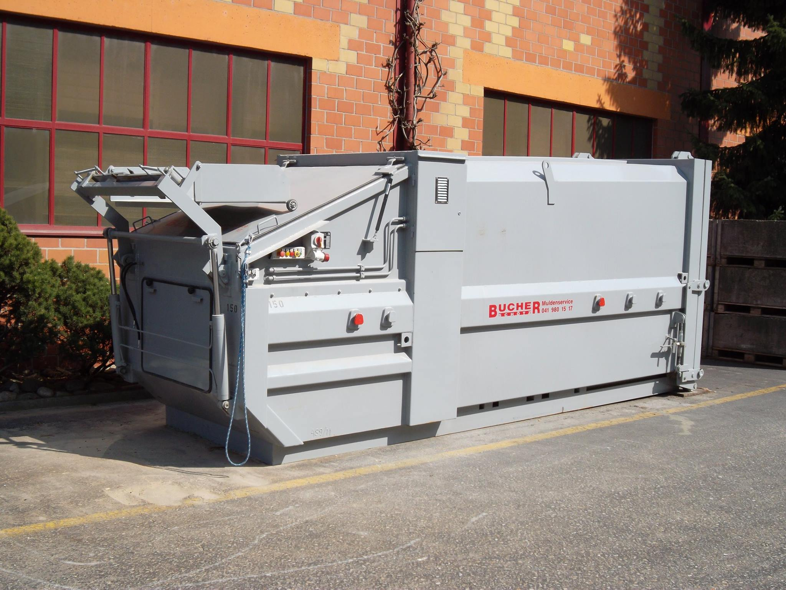
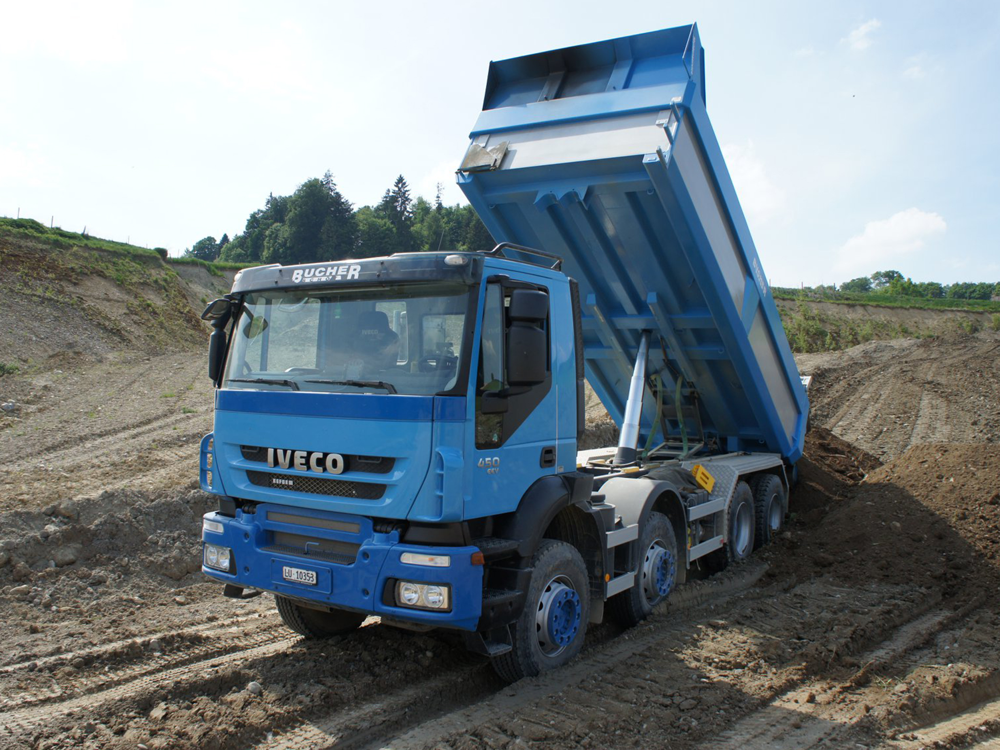
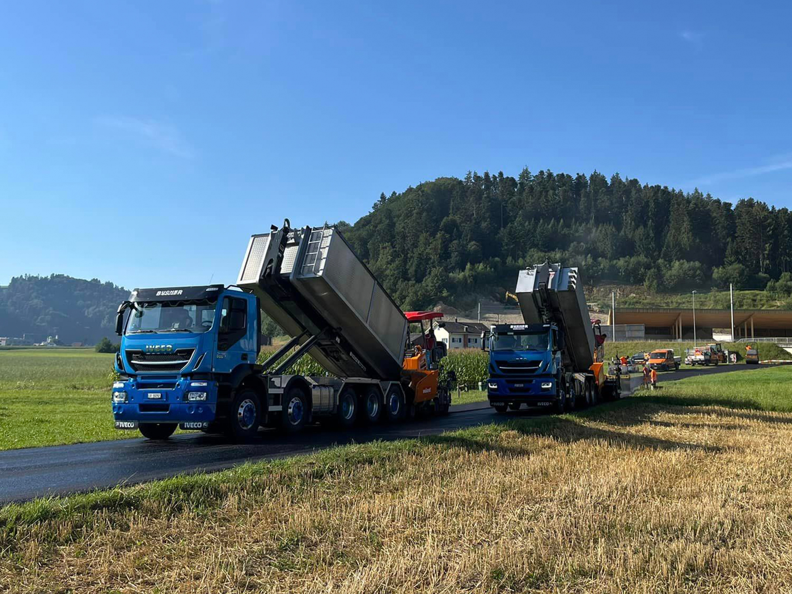
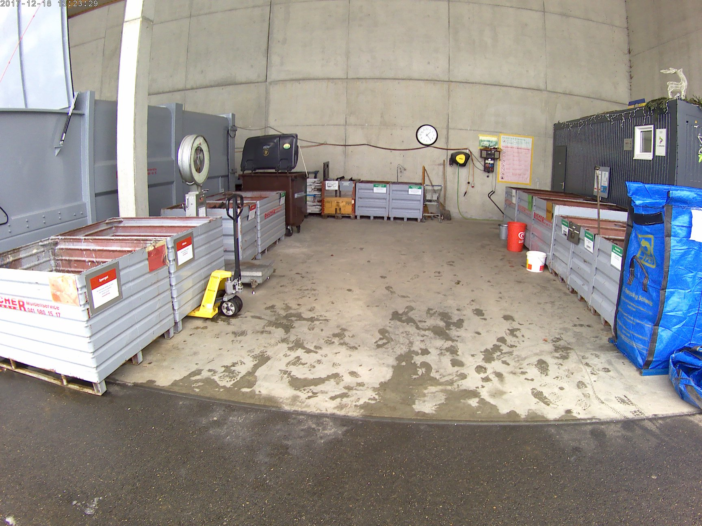

Willkommen bei K. & M. Bucher Transport AG
Ihr Partner für Transport & Entsorgung
Die Bucher Transporte AG gewährleistet zuverlässige, sichere und freundliche Dienstleistungen in den Bereichen Entsorgung, Recycling, Muldenservice und Kipperei. Mit einer modernen und umweltfreundlichen Fahrzeugflotte sowie hochqualifiziertem Personal setzen wir auf Effizienz und Nachhaltigkeit, um erstklassige Lösungen für alle Ihre Transportbedürfnisse anzubieten.
MULDENSERVICE
Wir bieten Ihnen Mulden in diversen Grössen und Ausführungen zu verschiedenen Zwecken an.
Mehr zu MuldenserviceKIPPER-TRANSPORT
Kipper-Transporte für verschiedene Zwecke stehen Ihnen für die gesamten Schweiz zur Verfügung.
Mehr zu Kipper-TransporteASPHALT-TRANSPORT
Für Bauunternehmen und Privatpersonen bieten wir ebenfalls einen Asphalt-Transport an.
Mehr zu Asphalt-TransporteSAMMELSTELLE
Bringen Sie Ihre Altsachen zur fachgerechten Entsorgung in unsere Sammelstelle in 6247 Schötz.
Mehr zur Sammelstelle